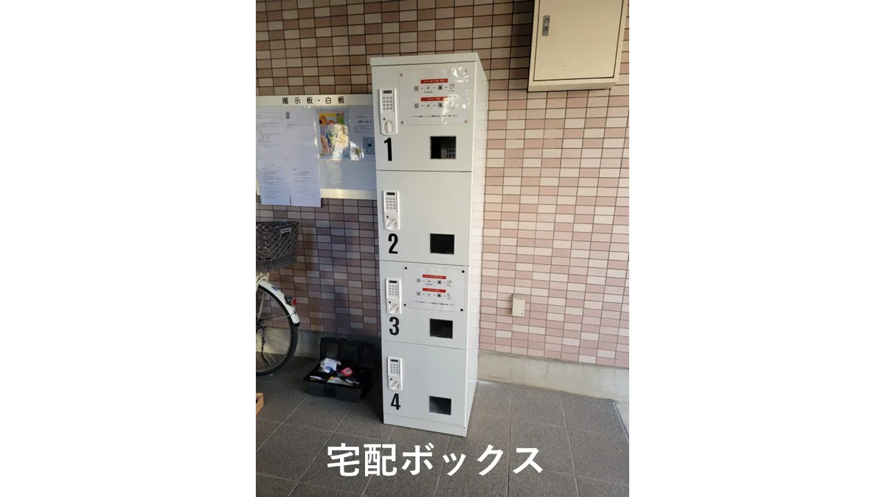
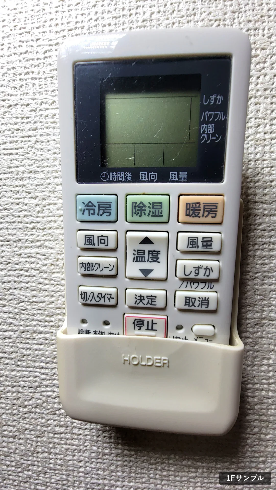
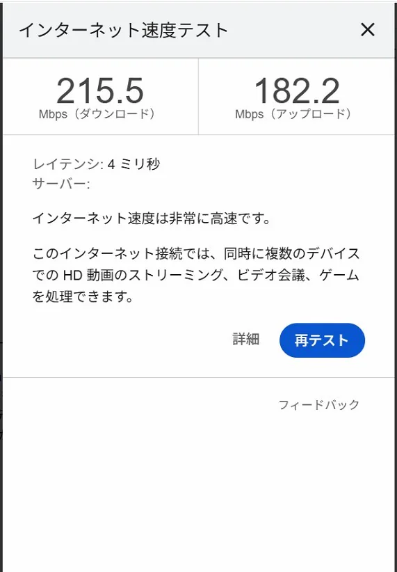
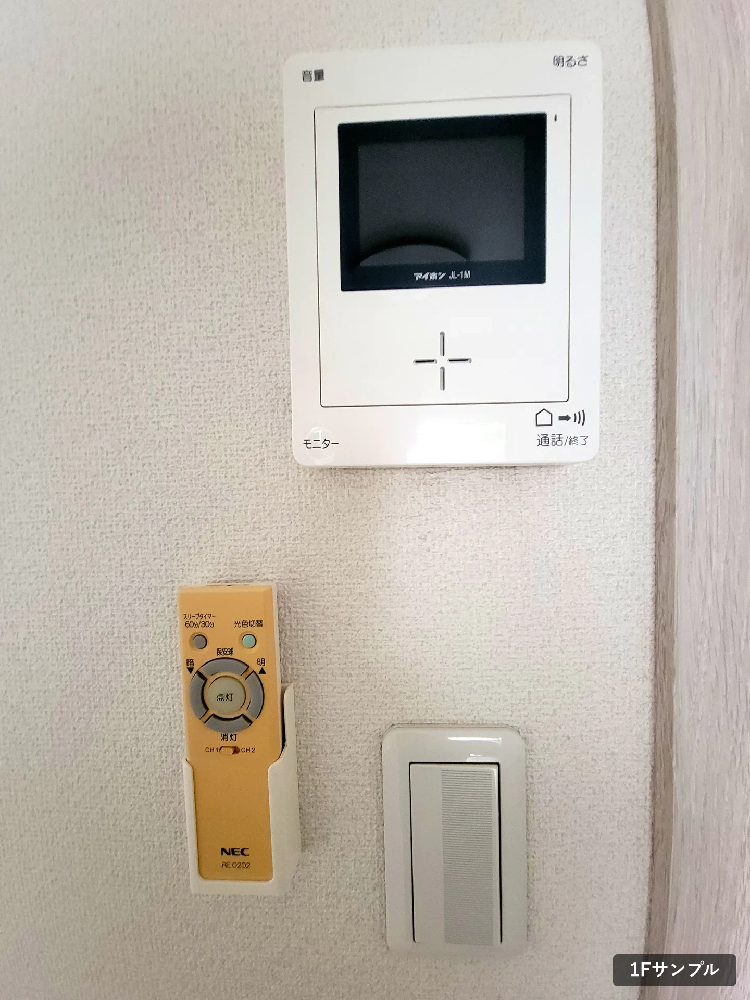
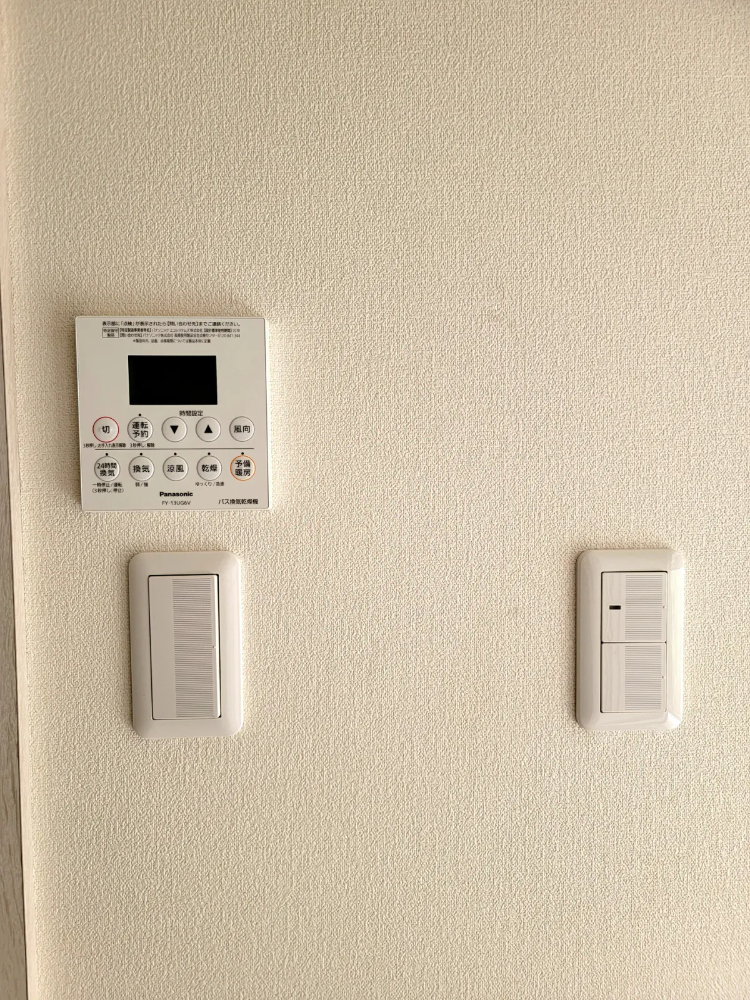
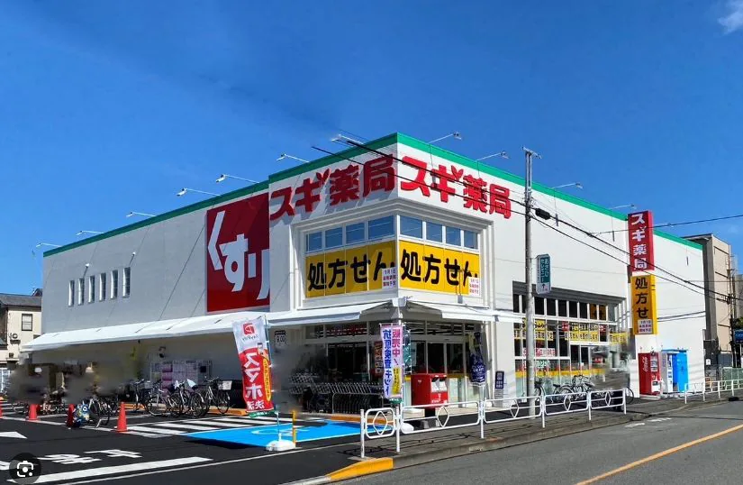
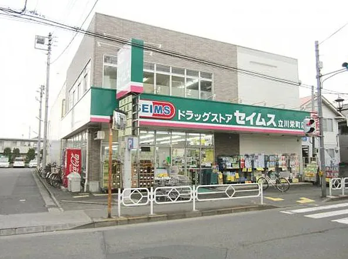
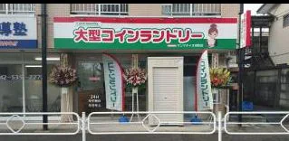
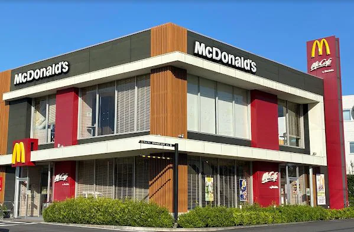

TACHIKAWA · TACHIHI · IZUMITAIKUKAN
立飛・泉体育館で、
26.4㎡のゆとりある1K。
立川市栄町6丁目、立飛・泉体育館エリアの広めの1K賃貸。ギガビット回線とWi-Fi 6を備え、バス停へ徒歩30秒、立川駅北口へバスで13分です。
AT A GLANCE
ROOM1K26.4㎡
INTERNET1GbpsWi-Fi 6
BUS STOP徒歩30秒公社住宅
TACHIKAWA ST.バスで13分立川駅 北口
TAMA MONORAIL徒歩11分泉体育館駅
TAMA MONORAIL徒歩13分立飛駅
ROOM TO BREATHE
仕事も、休息も。
ひと部屋の質を上げる。
自宅勤務やオンライン会議にも使いやすい通信環境。日用品の買い物から休日の外出まで、身近な範囲で暮らしが整います。
INTERIOR PHOTOS
室内写真
写真を選ぶだけで、画面幅に合わせて自動で並びます。クリックすると大きく表示できます。掲載している室内写真は、1階の一住戸を撮影したサンプルです。

FACILITIES
毎日を支える、
必要十分な設備。
- バス・トイレ別
- 浴室乾燥機システム
- インターホン
- ライトリモコン
- エアコン
- 各居室専用Wi-Fi SSID
- 宅配ボックス（4基）
- 監視カメラ（複数箇所）
- 24時間対応ごみ捨て場
- 24時間換気
- 共用部定期清掃（月2回）
- 自転車置き場
- 駐車場（軽自動車／コンパクト）
設備・利用条件は住戸や募集時期により異なる場合があります。契約前に募集資料でご確認ください。




ACCESS & NEIGHBORHOOD
駅へ、買い物へ。
日常の距離が短い。
公社住宅 バス停徒歩30秒
立川駅 北口バスで13分
多摩モノレール 泉体育館駅徒歩11分
多摩モノレール 立飛駅徒歩13分




WEEKEND
徒歩時間・周辺施設は提供されたPowerPoint（2026年8月時点）に基づきます。施設の営業状況や経路は変わる場合があります。
LIFESTYLE SIMULATIONS
実際の部屋と、
家具を置いた部屋。
各シミュレーションの生成に使った実写を左、その実写に家具・家電・小物を加えた画像を右へ、同じ表示サイズで並べています。
Simulationは家具・家電・小物のみを加えた生成画像です。部屋の寸法や設備仕様を示すものではありません。部屋によりフローリングやドアなどの色・仕様が異なります。
TETO HOUSE · TACHIKAWA
街と、部屋と、
ちょうどいい距離。
自宅で集中する日も、立川の街へ出かける日も。26.4㎡の1Kから、無理のない自分らしい暮らしを。